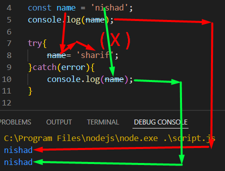
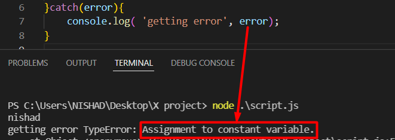

কোন code error হতে পারে কিন্তু সম্পূর্ণ নিশ্চিত নই ।
তখন সে code কে try এর মধ্যে রেখে ।
try এমন একটা জিনিস যে , তার মধ্যে থাকা কোড টা error দিলে সেটা error কোন প্রভাব ফেলবেনা ।
তাই যেই জিনিস টা জানি যে কোন সমস্যা তৈরি করতে পারে সেটাকে চেক করার জন্য try এর ভেতরে রাখতে হবে ।
এখন যদি কোন কারনে error কে দেখতে চাই তবে ,,,, নিছের মত করে catch এর মধ্যে call করতে হবে ।
___________ catch _____________

catch এর মধ্যে error এর output দিয়ে সেটাকে চেক করা হয়
এবং এই catch এর মধ্যে একটা perameter লিখতে হবে । (exceptions = ex ,, error = er ,, error ) যেকোনো একটা লিখতে হবে ।
এখানে const ভালু কে ২ বার assign করা হয়েছে ।
তাই এখানে error আসে ।